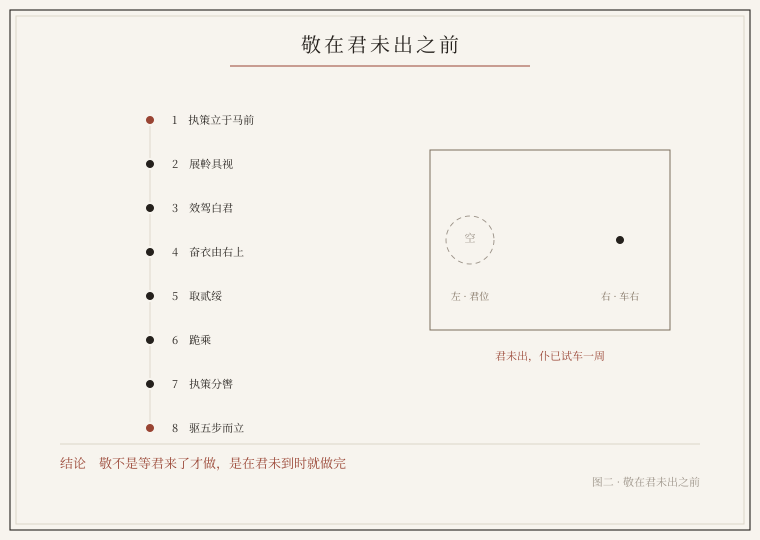

曲礼上 · 一·一百一十六 · 第 114 课
为君驾车的一套动作：车未驾时执鞭立马前，驾毕则检视、报驾、振衣、从右登车、跪乘、分辔、试驱五步。
说什么事：君车将驾，则仆执策立于马前。已驾，仆展軨、效驾，奋衣由右上取贰绥，跪乘，执策分辔，驱之五步而立。
落在哪一层：仪。讲的全是动作，一步不省。
为何编在此位：上节收于卜筮之度，此节转入仆御之节。由敬神转为敬事，由心转入手。
【经】君車將駕，則僕執策立於馬前。已駕，僕展軨、效駕，奮衣由右上取貳綏，跪乘，執策分轡，驅之五步而立。
【注】監駕，且為馬行。展軨具視。效駕，白已駕。奮，振去塵也。貳，副也。跪乘，未敢立，敬也。調試之。
仆 御车者。疏「古者仆用好人为之，故孔子曰『吾执御矣』」。
策 马杖。疏「执策是监驾。立马前，恐马行也」。
展軨 注「展軨具视」。疏「展，视也……从车軨左右四面看视之」；引卢氏「軨，辖头靻也」，孔以为是。
效驾 注「白已驾」。疏「效，白也。仆监视驾竟，而入白君」。
奋衣 注「振去尘也」。疏「于车后自振其衣去尘，从右边升上。必从右者，君位在左，故辟君空位」。
贰绥 注「贰，副也」。疏「绥，登车索。绥有二：一是正绥，拟君之升；一是副绥，拟仆右之升」。
分辔 疏「四马八辔……骖马内辔系于轼前，其骖马外辔并夹辕两服马各二辔，六辔在手」。
五步而立 疏「仆向跪而驱，令马行之，得五步止，而仆倚立待君出也」。
君车将要驾马，仆就执鞭立于马前。驾好之后，仆四面检视车辖车栏，入内禀报已驾；振去衣上尘，从右边登车，取过副绥，跪着乘车，一手执鞭、分握六辔，试行五步，然后立定等候。
一节八事，全在「未出之前」。君尚未出，仆已把车试过一遍。敬不是等君来了才做，是在君未到时就做完。
第一层 立于马前 注「监驾，且为马行」。立在马前，是防马走，也是让马知道有人在。御之术，先于御之技。
第二层 展軨具视 四面看一遍。疏解得实：车行由辖，故先看辖头；再看车栏。所谓「具视」，是不留一角未看。
第三层 效驾 入内报一句「驾毕」。这一句是交接：从此车由仆，君可以出。
第四层 跪乘 注「未敢立，敬也」。君未至而先立，便是僭位；故跪。分寸在膝下。
与今日何干 重要的事，提前试一遍，然后只说一句「可以了」。这两件合起来，才是可靠。
| 左 | 右 |
|---|---|
| 将驾，执策立于马前 | 监驾，且为马行 |
| 已驾，展軨 | 四面具视，辖与栏 |
| 效驾 | 入白已驾，交接之辞 |
| 奋衣由右上 | 振尘，避君左位 |
| 取贰绥 | 副绥，备仆升 |
| 跪乘 | 未敢立，敬也 |
| 执策分辔 | 一手杖，六辔在手 |
| 驱之五步而立 | 调试之，待君出 |
画一辆四马之车停于庭中，马已套好、缰绳收拢；车左之位空着，车右地上有一双登车后的浅印；车前一人的立影（仅剪影不画面容）手持一根细杖，杖尖点地。车辖处有一道环视的弧线，绕车一周未完合。不写文字。赭色只用在车辖与那道弧线上。
